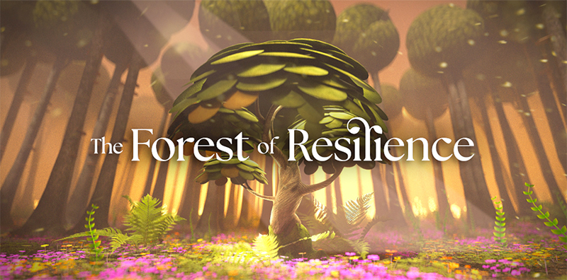

The Forest of Resilience - Meta VR App Project
Health & Fitness, Relaxation & MeditationTake a walk through the Forest of Resilience: a place of wonder where you can grow your resilience and learn how to stay focused and present. Everything you need to be resilient is already within you, ready to be unlocked. You’ll go on a journey through a mesmerising forest and uncover the four stages of resilience: engaging with adversity, persisting, rebounding and learning.
Responsibilities: I designed the project’s visual identity, including the logo, and created all UI screens, buttons, icons, and reusable components. I developed a cohesive and scalable design system to ensure consistency across the entire user interface and interactions.
Meta Store Link Figma Design File

Scope
The Forest of Resilience VR app guides users through a calming, immersive forest designed to enhance health, fitness, and mindfulness. Users explore four stages of resilience—engaging with adversity, persisting, rebounding, and learning—through interactive tasks and reflective experiences. The journey combines meditation spots, visual and audio cues, and optional journaling to reinforce focus, emotional strength, and self-awareness. Built for the Meta Quest platform, the app delivers a relaxing yet engaging experience that helps users unlock their inner resilience.